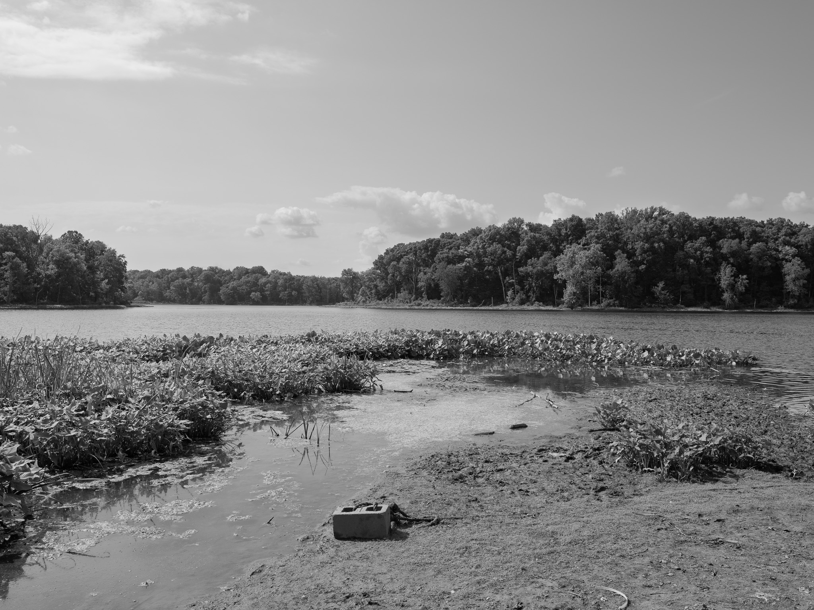
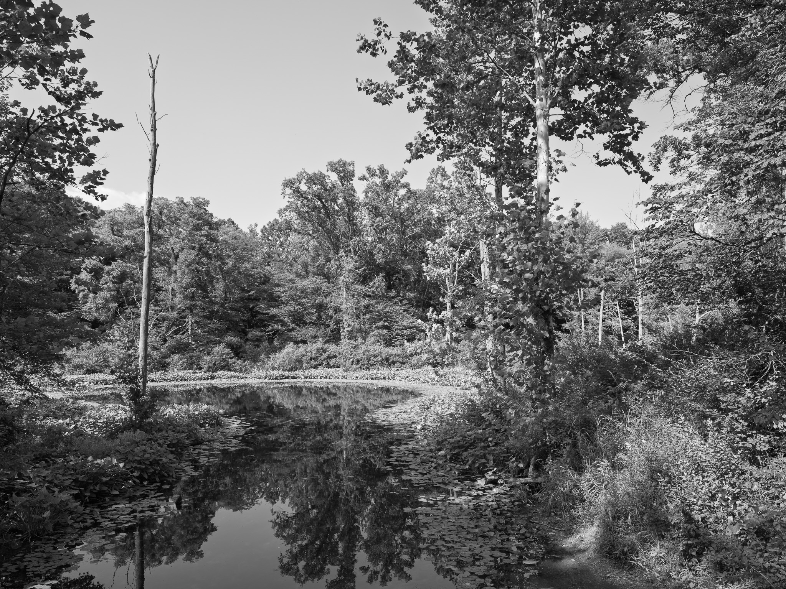
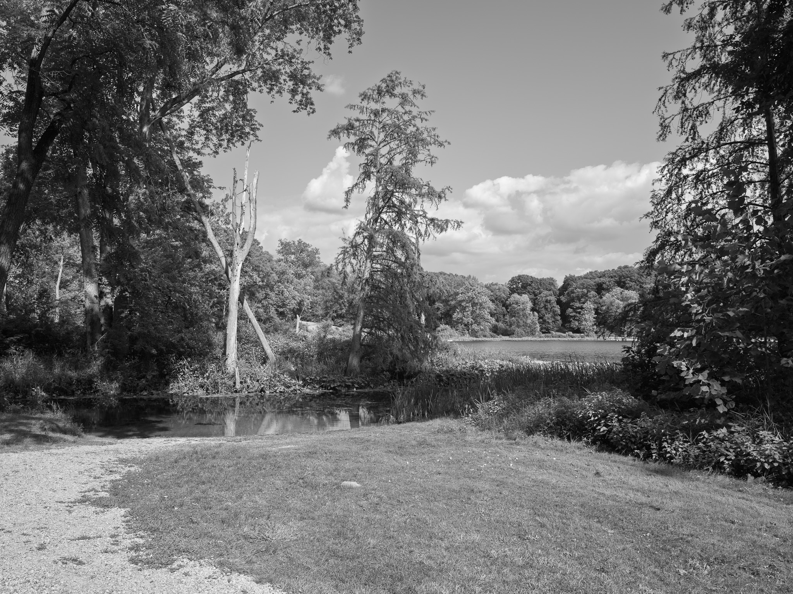
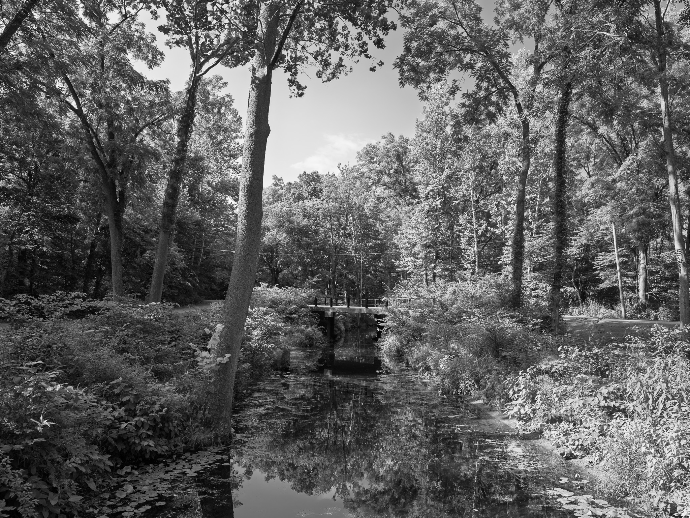
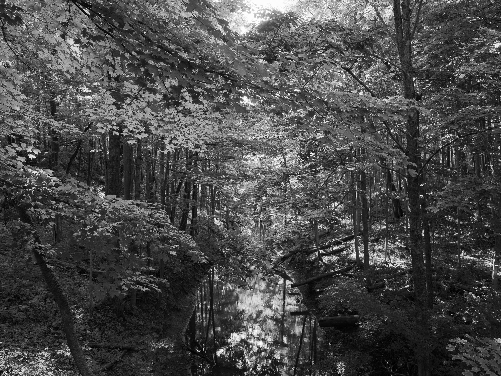

Public Lands Institute
Map
Images
Archive
About
Chain O'Lakes State Park
IN

Chain O'Lakes State Park 1 · 2026-08-05
_DSF3999.jpg

Chain O'Lakes State Park 2 · 2026-08-05
_DSF4012.jpg

Chain O'Lakes State Park 3 · 2026-08-05
_DSF4014.jpg

Chain O'Lakes State Park 4 · 2026-08-05
_DSF4016.jpg

Chain O'Lakes State Park 5 · 2026-08-05
_DSF4018.jpg
View all 5 images →
← Warren Dunes State Park
Eagle Marsh Nature Preserve →